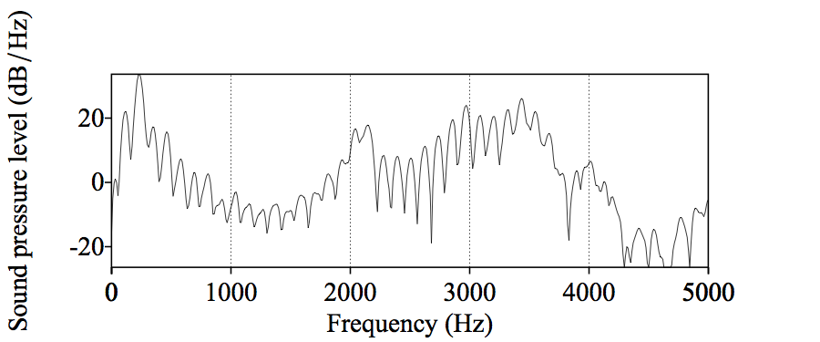

### This presentation is available online at: <a href="http://savethevowels.org/talks/ucsd_talk.html">http://savethevowels.org/talks/ucsd_talk.html</a> (Navigate with the arrow keys or on-screen controls) --- <img width="50%" src="humorimg/thecount.jpg"> # N-Gram Language Models ### Will Styler --- ### The Plan - What are N-Grams? - Examples from the EnronSent Corpus - How N-Grams can form a language model - What is this model good for? - What are the strengths of N-Gram models? - What are their weaknesses? --- # N-grams --- ### What is an N-gram? - An N-gram is a sequence of words that is N items long - 1 word is a 'unigram', 2 is a 'bigram', 3 is a 'trigram'... - We identify sequences in the text, then count their frequencies - And that's N-Gram analysis - "How often does this sequence of words occur?" --- ### How do we find N-Gram counts? - Choose a (large) corpus of text - Tokenize the words - Break them into individual items based on knowledge about language - Count all individual words (using something like [nltk](https://www.nltk.org/)) - Then all pairs of words... - Then all triplets... - All quadruplets... - ... and so forth - The end result is a table of counts by N-Gram --- ## Let's try it - We'll use the [EnronSent Email Corpus](http://savethevowels.org/enronsent/) - ~96,000 DOE-seized emails within the Enron Corporation from 2007 - ~14,000,000 words - This is a pretty small corpus for serious N-Gram work - But it's a nice illustrative case --- <pre><code data-trim> #!/usr/bin/env python import nltk from nltk import word_tokenize from nltk.util import ngrams es = open('enronsent_all.txt','r') text = es.read() token = nltk.word_tokenize(text) unigrams = ngrams(token,1) bigrams = ngrams(token,2) trigrams = ngrams(token,3) fourgrams = ngrams(token,4) fivegrams = ngrams(token,5) </code></pre> --- ### Unigrams - 'The' 560,524 - 'to' 418,221 - 'Enron' 391,190 - 'Jeff' 10,717 - 'Veterinarian' 2 --- ### Bigrams - 'of the' 61935 - 'need to' 15303 - 'at Enron' 6384 - 'forward to' 4303 - 'wordlessly he' 2 --- ### Trigrams - 'Let me know' 6821 - 'If you have' 5992 - 'See attached file' 2165 - 'are going to' 1529 --- ### Four-Grams - 'Please let me know' 5512 - 'Out of the office' 947 - 'Delete all copies of' 765 - 'Houston , TX 77002' 646 - 'you are a jerk' 35 --- ### Five-Grams - 'If you have any questions' 3294 - 'are not the intended recipient' 731 - 'enforceable contract between Enron Corp.' 418 - 'wanted to let you know' 390 --- ### Note that the frequencies of occurrence dropped as N rose - 'The' 560,524 - 'of the' 61,935 - 'Let me know' 6,821 - 'Please let me know' 5,512 - 'If you have any questions' 3,294 - *We'll come back to this later* --- ### OK, Great. - You counted words. Congratulations. - **What does this win us?** --- ### N-Grams give us more than just counts - If we know how often Word X follows Word Y (rather than Word Z)... - <strong>"What is the probability of word X following word Y?"</strong> - p(me|let) > p(flamingo|let) - We calculate log probabilities to avoid descending to zero - Probabilities are more useful than counts - <strong>Probabilities allow us to predict</strong> --- ### N-Grams can give us a language model - Answers "Is this likely to be a grammatical sentence?" - Any natural language processing application needs a language model - We can get a surprisingly rich model from N-Gram-derived information alone --- ### These probabilities tell us about Grammar - "You are" (11,294 occurrences) is more likely than "You is" (286 occurrences) - "Would have" (2362) is more likely than "Would of" (17) - "Might be able to" (240) is more common than "might could" (4) - "Thought Scott might could use some help..." - "Two agreements" (35) is more likely than "Two agreement" (2) - "Throw in" (35) and "Throw out" (33) are much more common than 'Throw' + other prepositions - **n-grams provide a very simple *language model* from which we can do inference** --- ### These probabilities tell us about the world - Probabilities of language are based in part on our interaction with the world - People at Enron 'go to the' bathroom (17), Governor (7), Caymans (6), assembly (6), and senate (5) - People at Enron enjoy good food (18), Mexican Food (17), Fast Food (13), Local Food (4), and Chinese Food (2) - But "Californian Food" isn't a thing - Power comes from California (9), Generators (6), EPMI (3), and Canada (2) - ... and mostly gets sold to California (29) - **Probable groupings tell us something about how this world works** --- ### N-Gram models are *really* useful - Provide some grammatical information - "What word forms regularly occur together?" - Provide some real-world information - "What are people most commonly talking about?" - They can solve real world problems --- ### N-Gram uses in the real world - Predictive typing - And don't have the time or two of them and they said let's say that you have to be at the house in a bit of traffic ... - Speech recognition - "I took a walk for exercise" - "I need a wok for stir fry" - Typo detection - "I made a bog mistake" - "She got lost in a peat big" - Sentiment analysis - How often do "Toyota" and "awful" co-occur relative to "Nissan" and "awful"? --- ### Sociolinguistic n-gramming - "How often is word X used to describe black athletes vs. white athletes?" - "Is Unigram frequency of these words predicted by subject race?" - "What about racially loaded bigrams?" - Words like "Aggressive", "Angry", "Unstoppable" and "Ferocious" are preferentially applied to black athletes - Work is ongoing - c.f [Wright 2017, The Reflection and Reification of Racialized Language in Popular Media](https://www.researchgate.net/publication/317425125_The_Reflection_and_Reification_of_Racialized_Language_in_Popular_Media) --- ## ... and all of this comes from counting words --- ## N-Gram Modeling Strengths --- ### N-Gram Modeling is relatively simple - Easy to understand and implement conceptually - Syntax and semantics don't need to be understood - You don't need to annotate a corpus or build ontologies - <em>As long as you can tokenize the words, you can do an N-Gram analysis</em> - Makes it possible for datasets where other NLP tools might not work - A basic language model comes for free --- ### N-Gram Modeling is easily scalable - It works the same on 1000 words or 100,000,000 words - Modest computing requirements - More data means a better model - You see more uses of more N-Grams - Your ability to look at higher Ns is limited by your dataset - Probabilities become more defined - ... and we have a LOT of data --- ## N-Gram Modeling Weaknesses --- ### They only work with strict juxtaposition - "The tall giraffe ate." and "The giraffe that ate was tall." - We view these both as linking "Giraffe" and "Tall", but the model doesn't - "The angry young athlete" and "The angry old athlete" - These won't register as tri-gram matches - Windowed association models and Latent Semantic Analysis are better at finding co-occurrence --- ### Very poor at handling uncommon or unattested N-Grams - Models are only good at estimating items they've seen previously - "Her Onco-Endocrinologist resected Leticia's carcinoma" - "Bacon flamingo throughput demyelination ngarwhagl" - This is is why <em>smoothing</em> is crucial - Assigning very low probabilities to unattested combinations - ... and why more data means better N-Grams --- ### N-Gram models are missing information - Syntax, Coreference, and Part of Speech tagging provide important information - "You are" is more likely than "You is" (286 occurrences) - "... the number I have given you is my cell phone..." - "I bought an awful Toyota." vs. "I bought a Toyota. It's awful." - No juxtaposition without resolving anaphora - "Time flies like an arrow, fruit flies like a banana" - Part-of-speech distinguishes these bigrams - **There's more to language than juxtaposition** --- ## Conclusion --- ### N-Grams aren't the solution to every problem - They're missing crucial information about linguistic structure - They handle uncommon and unattested forms poorly - They only work with strict juxtaposition --- ### N-Gram Models are a powerful tool for NLP - They're simple - They have minimal requirements for the data - They provide rich information when used intelligently - And they scale beautifully with the sorts of huge datasets available today --- ## N-Grams are not the only tool we need to model language - ... but they are a really excellent start --- ## Questions? --- --- <img width="50%" src="phonmedia/vowelformants.gif"> # Vowel Formants, the Source, and the Filter ### Will Styler --- ### The Source-Filter Dichotomy is a 'threshold concept' in Acoustic Phonetics - Important for understanding speech production and perception - Key to being able to discuss vowel formants - Useful for understanding many elements of acoustics --- ### The Plan - How are we going to visualize sound today? - What are vowel formants? (Practically) - The Source-Filter Model of Speech Production - Vowel formants and resonance - Source-Filter Independence --- ## Three Ways to Visualize Sound --- ### Waveforms <img width="70%" src="phonmedia/noisewaveform.png"> <audio controls> <source src="phonmedia/noise.wav" type="audio/wav"> </audio> --- ### Spectral Slice (FFT) <img width="70%" src="phonmedia/noisefft.jpg"> --- ### Spectrograms <img width="70%" src="phonmedia/noisebbspectrogram.png"> --- ## Vowel Formants --- ### We talk about vowel formants a great deal in acoustic phonetics - We measure them for vowel production - We talk about them in vowel perception - They're useful cues for consonants - They're one of the first things people gravitate to in spectrograms --- ### We see formants in spectrograms <img width="70%" src="phonmedia/noisebbspectrogram.png"> --- ### We label them as F1, F2, and F3 --- ### The frequency of Vowel formants is main cue for perceiving vowels in English <img width="70%" src="phonmedia/vowelformants.gif"> - ... and they're helpful for perceiving consonants too! --- ### But what <em>are</em> they, really? --- ## The Source-Filter Model of Speech Production --- ### Let's talk about the vocal tract <img width="20%" src="phonmedia/sagittalsection_source.png"><img width="20%" src="phonmedia/sagittalsection_filter.png"> 'Source' and 'Filter' --- ### Source (The Vocal Folds) <img width="20%" src="phonmedia/sagittalsection_source.png"> --- ### Source (The Vocal Folds) <img width="40%" src="phonmedia/larynx_glottis.jpg"> - The vocal folds produce signal with a given fundamental frequency (f0) and evenly spaced harmonics. --- ### This source signal is not so pretty <img width="70%" src="phonmedia/voicing_filtered_fft.png"> <audio controls> <source src="phonmedia/voicing.wav" type="audio/wav"> </audio> --- ### This source signal is not so pretty <img width="70%" src="phonmedia/voicing_filtered_spectrogram.png"> <audio controls> <source src="phonmedia/voicing.wav" type="audio/wav"> </audio> --- ### This signal carries pitch information, but not much else - Everything else happens in the... --- ### Filter (The Vocal Tract) <img width="20%" src="phonmedia/sagittalsection_filter.png"> - Filters that ugly signal by changing the position of articulators - What do I mean by filter? --- ### Resonance <img width="20%" src="phonmedia/resonance_tubes.png"> - Some wavelengths 'fit' well within a cavity of a given size or shape - Sound at those wavelengths will grow stronger because they 'resonate' - Sound at other wavelengths will grow quieter and are 'damped' --- ### We all understand resonance <img width="50%" src="img/bathtub.png"> --- ### Resonant Cavities act like filters - Some frequencies are made stronger - Some are made weaker - Some are unaffected - ... and this is how vowels work --- ### The vocal tract filters the source - Changing the position of the articulators affects the size and shape of the cavity - <em>Changing the position of articulators in your vocal tract affects resonances</em> --- ### We take something boring <img width="70%" src="phonmedia/voicing_filtered_spectrogram.png"> (The source signal) --- ### ... and filter it into something beautiful <img width="70%" src="phonmedia/noisebbspectrogram.png"> --- <img width="50%" src="img/magic.jpg"> --- ### Different vowels are just different cavity shapes <img width="40%" src="phonmedia/voweltongue2.png"> --- ### Each cavity shape produces different resonances <img width="70%" src="phonmedia/vowelformants.gif"> --- ### Changes in tongue position mean changes in formant structure <img width="70%" src="phonmedia/vowelformantsarticulation.png"> --- ### A (creepy) demonstration <iframe width="560" height="315" src="https://www.youtube.com/embed/qobhDJ_vEOc?rel=0" frameborder="0" allow="autoplay; encrypted-media" allowfullscreen></iframe> --- ### So, we have a source, and a filter - The larynx produces a signal with lots of harmonics - The rest of the vocal tract filters it into something we recognize as "speech" --- ### Perceiving vowels using formants - Vowel perception is formant based - Although duration, nasality, and other features can play a role! - Formants give us information about what the tongue is doing <em>even when no closures are being made</em> - Formants tell me what your tongue is doing in the mouth! --- ### Measuring vowels using formants - Studying vowel quality is usually done using formants - Although Ultrasound and MRI are possible too - Formants tell me what your tongue is doing in the mouth - So changes in formants map to changes in articulation --- ## But <em>where are they?!</em> --- ### Harmonics are not formants! - "The vocal folds produce harmonics" - "Resonance changes harmonics, does it create separate formants?" - <strong>"Where can I see the formants in a spectral slice?"</strong> --- ### Formants are obvious when you're looking at sounds from a distance - They show up better when you're not as sharply focused on frequency <img width="70%" src="phonmedia/noisebbspectrogram.png"> --- <img width="70%" src="phonmedia/noisefft.jpg"> - **"Where'd the formants go?!"** --- ### A more grounded example <img src="phonmedia/topo_no_axes.png"> --- <img class="big" src="phonmedia/topo_map.png"> --- <img class="big" src="phonmedia/topo_labeled.png"> --- <img src="phonmedia/topo_ranges.png"> --- ### Formants are the ranges, not the mountains!  --- ### Formants are the areas of the spectrum where harmonics resonate - Where harmonics of the source are amplified, rather than damped - This indicates certain positions for the tongue in the mouth - ... and that's what we're listening for when identifying vowels and consonants --- One final, crucial point... --- ## Source and Filter are Independent --- ### The Filter will filter any source signal <img width="70%" src="phonmedia/source_filter_independence.png"> [Image Credit](http://www.haskins.yale.edu/featured/heads/mmsp/acoustic.html) --- ### Changing Pitch doesn't change the resonances <img width="70%" src="phonmedia/sourcefilter_changepitch_broad.png"> <audio controls> <source src="phonmedia/sourcefilter_changepitch.wav" type="audio/wav"> </audio> --- ### Changing resonances doesn't change pitch <img width="70%" src="phonmedia/sourcefilter_changeformants_broad.png"> <audio controls> <source src="phonmedia/sourcefilter_changeformants.wav" type="audio/wav"> </audio> --- ### Voice pitch is unrelated to resonance. - <strong>Resonance is unrelated to voice pitch.</strong> --- ### In fact, there are lots of sources possible - ... which is good news for people who no longer have a larynx --- ### Electrolaryngeal Speech <iframe width="560" height="315" src="https://www.youtube.com/embed/riHLUOXt1Aw?rel=0&start=15" frameborder="0" allow="autoplay; encrypted-media" allowfullscreen></iframe> --- ### Esophageal Speech <img width="20%" src="phonmedia/sagittalsection_source.png"> --- ### Esophageal Speech <iframe width="560" height="315" src="https://www.youtube.com/embed/kyN_NFoBfiw?rel=0" frameborder="0" allow="autoplay; encrypted-media" allowfullscreen></iframe> --- <img width="70%" src="img/bearsrepeating.jpg"> ### The Source and the Filter are Independent --- ## Final conclusions --- ## Take-home points - The vocal folds provide a source signal for speech - The rest of the vocal tract filters that source into identifiable sounds - We call those ranges of harmonics that resonate with a certain articulation "Formants" - These resonances tell us how the vocal tract is being shaped at that moment - Formants are crucial for percieving (and measuring) vowels - The Source and the Filter are independent --- ... And vowel acoustics are really, <em>really</em> cool! <img width="50%" src="img/magic.jpg"> --- ### Questions? --- ### This presentation is available online at: <a href="http://savethevowels.org/talks/ucsd_talk.html">http://savethevowels.org/talks/ucsd_talk.html</a> --- ### Thank you! ---